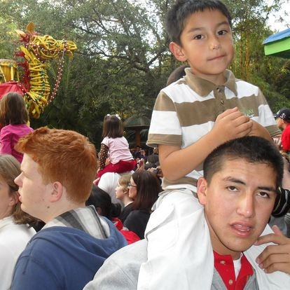
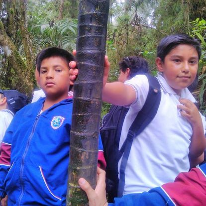
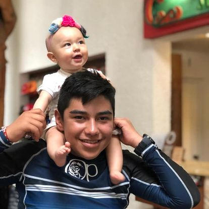
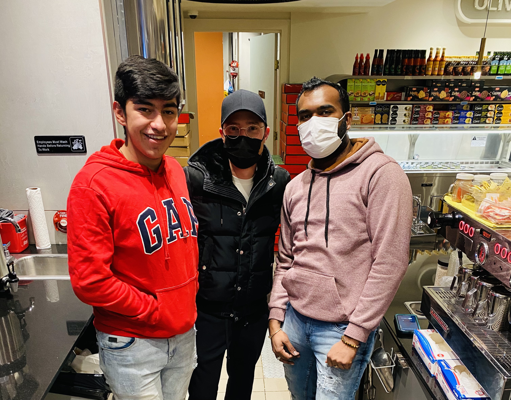

Programación de Nuevas Tecnologías
Juan Pablo Rubio Franco
Giovanni Esteban Moreno Urbina
Inicios
(0-4 años)
Nací en Tabio, un pueblo cerca de Bogotá. Es un pueblo básico con carreteras de piedra y con mucho campo, por lo que hay muchos animales cerca siempre. Mis primeros 4 años no fueron muy interesantes, era un niño inquieto y por culpa de eso a los 3 años me rompí la clavicula y desde ahí ya soy alguien mas calmado.
Trancisión 1
(5 años)
A la edad de 5 años estuve en mi primer colegio, mi familia no tenía mucho dinero por lo que estudié en un colegio de Tabio que no era muy bueno, pero al cual podía llegar caminando desde mi casa y quedaba solo a 3 cuadras, por lo que me podía ir solo.
A la edad de 5 años estuve en mi primer colegio, mi familia no tenía mucho dinero por lo que estudié en un colegio de Tabio que no era muy bueno, pero al cual podía llegar caminando desde mi casa y quedaba solo a 3 cuadras, por lo que me podía ir solo.
Transición 2 y primaria
(6-11 años)
Mi segundo y último colegio fué en Chía, se llamaba entonces "Gimnasio Campestre Meryland", pero su nombre varió con el pasar de los años.
Al venir de un colegio no muy bueno, tuve que repetir transición para estar a la altura de los demás estudiantes, lo cual hizo que me graduara un poco viejo comparado con el resto de mis amigos.
En toda mi primaria me mantuve en la misma escuela y no hubo cambios, lo único que cambiaba es que a veces me iba en bus, a veces en ruta, a veces en bicicleta desde tabio. mi medio de transporte no era algo fijo.
Bachillerato
(11-17 años)
En Bachillerato todo empezó a cambiar, mis notas no eran las mejores pero pasaban de 4, y pese a que en el colegio no cambió nada hasta décimo y once, desde sexto año empecé a trabajar, lo que me ayudó a empezar a aprender sobre economía, como ahorrar, saber el valor del dinero y esas cosas.
Mientras tanto hacía un par de cursos online gratuitos para ir mejorando mi curriculum y mis conocimientos. Pero al nacer mi hermana se me complicó seguir haciendo cursos, por lo que me detuve. pero se pueden ver los que hice aquí.
Al llegar a Décimo conocí la universidad de la sabana, súpe que quería estudiar ahí, pero al no tener el dinero suficiente se le hacía imposible a mi familia pagarlo.
En once ya estaba cerca de terminar, y los ahorros que había conseguido desde noveno con mi trabajo pensé que era una buena idea ir a estudiar cualquier cosa en Estados Unidos. Por lo que me decidí en estudiar inglés, obtuve Visa de Estudio y empecé a estudiar allí por un par de meses.
inglés
(17-18 años)
En 2021 empecé a estudiar inglés viviendo por mi cuenta, pero se me estaba acabando la plata, y conocí a alguien que me ayudó a conseguir Visa de trabajo con una compañía Estadounidence, y ahí pude estudiar y trabajar unos meses mientras ahorraba para mi educación universitaria.
En ese año también empecé a leer libros tanto de literatura como de ajedréz, Mejorando mucho en éste último pero perdiendo el interes por falta de competencia últimamente.
